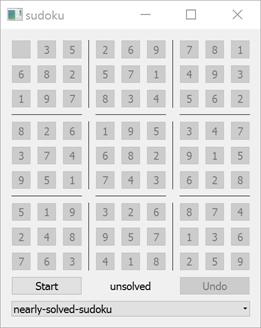

SCXML Sudoku
Demonstrates the use of separate javascript file with SCXML.
Running the Example
To run the example from Qt Creator, open the Welcome mode and select the example from Examples. For more information, visit Building and Running an Example.
Sudoku Features

Our sudoku contains the following features:
- Initially and when the game ends, the sudoku enters the
idlestate. In that state the players can see if their last game finished successfully or not. The state machine is then in one of two child states of theidlestate:solvedorunsolved, respectively. In theidlestate the players can also choose the sudoku grid they would like to solve. The grid is disabled and the user interaction is ignored. - After players click the Start button, the sudoku enters the
playingstate and is ready for the user interaction on the board. - When the game is in the
playingstate and the players click the Stop button, the game ends and enters theunsolvedchild state of theidlestate. If the players have solved the current puzzle successfully, the game automatically ends and enters thesolvedchild state of theidlestate indicating success. - The board consist of 81 buttons, laid out in a 9x9 grid. The buttons with initial values given remain disabled during the game. The players can only interact with buttons initially empty. Each click on the button increases its value by one.
- During the game the Undo button is available for the players' convenience.
SCXML Part: Internal Logic Description
The sudoku.scxml file describes the internal structure of the states the sudoku game can be in, defines the transitions between states, and triggers the appropriate script functions when the transitions take place. It also communicates with the GUI part by sending events and listening to the upcoming events and reacting to them.
We use the ECMAScript data model:
<scxml xmlns="http://www.w3.org/2005/07/scxml" version="1.0"
name="Sudoku" datamodel="ecmascript">
We declare the following variables:
<datamodel>
<data id="initState"/>
<data id="currentState" expr="[[]]"/>
<data id="undoStack"/>
</datamodel>
| Variable | Description |
|---|---|
initState | Holds the initial state of the current game. It is a two-dimensional array of 9x9 cells that contain initial sudoku numbers. The value of zero means the cell is initially empty. |
currentState | Holds the current state of the game being played. It is similar to the initState variable and initially contains the same content. However, when the players start entering the numbers into the empty cells, this variable is being updated accordingly, while the initState variable remains unchanged. |
undoStack | Holds the history of players' moves. It is a list of the cells' coordinates that were touched last. Each new modification during a game adds a pair of x and y coordinates to that list. |
The variables above are shared with the script helper functions defined in the sudoku.js file:
<script src="sudoku.js"/>
We call some of the functions defined there when taking transitions or in reaction to the events sent by the GUI.
All the possible states mentioned before are defined in a root state game.
<state id="game">
<onentry>
<raise event="restart"/>
</onentry>
<state id="idle">
...
<state id="unsolved"/>
<state id="solved"/>
</state>
<state id="playing">
...
</state>
...
</state>
When the sudoku example is started, the state machine enters the game state and stays in this state until the application exits. When entering this state, we raise internally the restart event. This event is also being raised whenever the players change the current sudoku grid or when they start the game by pressing the Start button. We do not want to send it when they have finished the current game because we still want to show the filled grid from the last game play. So, this event is being raised from three different contexts and is captured internally once in a targetless transition of the game state:
<transition event="restart">
<script>
restart();
</script>
<raise event="update"/>
</transition>
When we catch the restart event, we call a helper restart() script method, defined in the sudoku.js file and raise internally an additional update event.
function restart() {
for (var i = 0; i < initState.length; i++)
currentState[i] = initState[i].slice();
undoStack = [];
}
The restart() function assigns the initState into the currentState variable and clears the undoStack variable.
The update event is raised internally whenever we want to notify the GUI that the grid contents have been changed and that the GUI should update itself according to the passed values. This event is caught in another targetless transition of the game state:
<transition event="update">
<send event="updateGUI">
<param name="currentState" expr="currentState"/>
<param name="initState" expr="initState"/>
</send>
</transition>
We send the external event updateGUI, which is being intercepted in the C++ code. The updateGUI event is equipped with additional data, specified inside <param> elements. We pass two parameters, which are accessible externally through the currentState and initState names. The actual values passed for them equal the datamodel's currentState and initState variables, respectively, which are specified by the expr attributes.
<state id="idle">
<transition event="start" target="playing"/>
<transition event="setup" target="unsolved">
<assign location="initState" expr="_event.data.initState"/>
<raise event="restart"/>
</transition>
<state id="unsolved"/>
<state id="solved"/>
</state>
When in idle state, we react to two events, which may be sent by the GUI part: start and setup. Whenever we receive the start event, we just transition to the playing state. When we receive the setup event, we expect that the GUI part has sent us the new grid to be solved. The grid's new initial state is expected to be passed through the initState field of _event.data. We assign the passed value to the initState variable defined in our datamodel and restart the grid's contents.
<state id="playing">
<onentry>
<raise event="restart"/>
</onentry>
<transition event="tap">
<if cond="isValidPosition()">
<script>
calculateCurrentState();
</script>
<if cond="isSolved()">
<raise event="solved"/>
</if>
<raise event="update"/>
</if>
</transition>
...
</state>
Whenever we enter the playing state, we reset the grid's contents since we could have been still showing the contents from the previous game play. In the playing state we react to possible events sent from the GUI: tap, undo, and stop.
The tap event is sent when the players press one of the enabled sudoku cells. This event is expected to contain additional data specifying the cell's coordinates, which are passed through the x and y fields of _event.data. First, we check if the passed coordinates are valid by invoking the isValidPosition() script function:
function isValidPosition() {
var x = _event.data.x;
var y = _event.data.y;
if (x < 0 || x >= initState.length)
return false;
if (y < 0 || y >= initState.length)
return false;
if (initState[x][y] !== 0)
return false;
return true;
}
We ensure the coordinates are neither negative nor bigger than our grid. In addition, we check if the coordinates point to an initially empty cell, since we can not modify the cells initially given by the grid description.
When we have ensured the passed coordinates are correct, we call calculateCurrentState() script function:
function calculateCurrentState() {
if (isValidPosition() === false)
return;
var x = _event.data.x;
var y = _event.data.y;
var currentValue = currentState[x][y];
if (currentValue === initState.length)
currentValue = 0;
else
currentValue += 1;
currentState[x][y] = currentValue;
undoStack.push([x, y]);
}
This function increments the value of the passed grid's cell and adds the new move to the undo stack history.
Right after the calculateCurrentState() function finishes its execution, we check whether the grid is already solved by calling the isSolved() script function:
function isOK(numbers) {
var temp = [];
for (var i = 0; i < numbers.length; i++) {
var currentValue = numbers[i];
if (currentValue === 0)
return false;
if (temp.indexOf(currentValue) >= 0)
return false;
temp.push(currentValue);
}
return true;
}
function isSolved() {
for (var i = 0; i < currentState.length; i++) {
if (!isOK(currentState[i]))
return false;
var column = [];
var square = [];
for (var j = 0; j < currentState[i].length; j++) {
column.push(currentState[j][i]);
square.push(currentState[Math.floor(i / 3) * 3 + Math.floor(j / 3)]
[i % 3 * 3 + j % 3]);
}
if (!isOK(column))
return false;
if (!isOK(square))
return false;
}
return true;
}
The isSolved() function returns true if the grid is properly solved. Since we need to check each row, each column, and each 3x3 square, we define the isOK() helper function. This function takes the list of numbers and returns true if the passed list contains unique numbers and no number equals zero, meaning there is no empty cell. The main loop of the isSolved() is invoked nine times. In every iteration, we construct three lists of numbers representing a row, a column, and a square of the grid and call isOK() for them. When all 27 lists are OK, the grid is solved properly and we return true.
Coming back to our SCXML file, in case isSolved() returns true, we raise the solved event internally. The last instruction in case of a proper move is to raise the update event, since we need to notify the GUI about the grid's change.
<state id="playing">
...
<transition event="undo">
<script>
undo();
</script>
<raise event="update"/>
</transition>
<transition event="stop" target="idle"/>
<transition event="solved" target="solved"/>
</state>
When in the playing state, we also react to the undo event sent from the GUI. In this case, we call the undo() script function and notify the GUI about the need of an update.
function undo() {
if (!undoStack.length)
return;
var lastMove = undoStack.pop();
var x = lastMove[0];
var y = lastMove[1];
var currentValue = currentState[x][y];
if (currentValue === 0)
currentValue = initState.length;
else
currentValue -= 1;
currentState[x][y] = currentValue;
}
The undo() function removes the last move from the history, if there was any, and decrements the current value for the cell described by the coordinates taken from this move.
The playing state is also ready for the stop event sent by the GUI when the players press the Stop button. In this case, we simply activate the idle state.
In addition, we intercept the solved event sent internally and activate the solved state in this case.
C++ Part: Constructing the GUI
The C++ part of the application consists of a MainWindow class which constructs the GUI and glues it with the SCXML part. The class is declared in mainwindow.h.
class MainWindow : public QWidget { Q_OBJECT public: explicit MainWindow(QScxmlStateMachine *machine, QWidget *parent = nullptr); private: QScxmlStateMachine *m_machine = nullptr; QList<QList<QToolButton *>> m_buttons; QToolButton *m_startButton = nullptr; QToolButton *m_undoButton = nullptr; QLabel *m_label = nullptr; QComboBox *m_chooser = nullptr; };
The MainWindow class holds the pointer to the QScxmlStateMachine *m_machine, which is the state machine class automatically generated by Qt out of the sudoku.scxml file. It also holds the pointers to some GUI elements.
MainWindow::MainWindow(QScxmlStateMachine *machine, QWidget *parent) : QWidget(parent), m_machine(machine) {
The constructor of the MainWindow class instantiates the GUI part of the application and stores the pointer to the passed state machine. It also initializes the GUI part and glues the GUI part to the state machine by connecting their communication interfaces together.
connect(button, &QToolButton::clicked, this, [this, i, j]() {
QVariantMap data;
data.insert(u"x"_s, i);
data.insert(u"y"_s, j);
m_machine->submitEvent("tap", data);
});
First, we create 81 buttons and connect their clicked signal to a lambda expression that submits the tap event to the state machine passing the button's coordinates.
Later, we add some horizontal and vertical lines to the grid in order to group buttons in 3x3 boxes.
connect(m_startButton, &QAbstractButton::clicked, this, [this]() {
if (m_machine->isActive("playing"))
m_machine->submitEvent("stop");
else
m_machine->submitEvent("start");
});
We create the Start / Stop button and connect its clicked signal to a lambda expression which submits the stop or start event depending on whether the machine is in playing state or not, respectively.
We create a label informing whether the grid is solved or not, and an Undo button, which submits the undo event whenever it is clicked.
connect(m_undoButton, &QAbstractButton::clicked, this, [this]() {
m_machine->submitEvent("undo");
});
Then we create a combobox that is filled with grid names to be solved. These grids are read from the :/data directory of the application compiled-in resources.
connect(m_chooser, &QComboBox::currentIndexChanged, this, [this](int index) {
const QString sudokuFile = m_chooser->itemData(index).toString();
const QVariantMap initValues = readSudoku(sudokuFile);
m_machine->submitEvent("setup", initValues);
});
const QVariantMap initValues = readSudoku(
m_chooser->itemData(0).toString());
m_machine->setInitialValues(initValues);
Whenever the players change the grid in the combobox, we read the grid contents storing it in the variant map under the initValues key as a list of lists of int variants and we submit the setup event to the state machine passing the grid's contents. Initially, we read the first available grid from the list and pass it directly to the sudoku state machine as the initial grid.
m_machine->connectToState("playing", [this] (bool playing) {
...
});
m_machine->connectToState("solved", [this](bool solved) {
if (solved)
m_label->setText(tr("SOLVED !!!"));
else
m_label->setText(tr("unsolved"));
});
m_machine->connectToEvent("updateGUI", [this](const QScxmlEvent &event) {
...
});
Later, we connect to the signals that are being sent whenever the machine enters or leaves the playing or solved states, and we update some GUI parts accordingly. We also connect to the state machine's updateGUI event and update all the buttons' values according to the passed cells' states.
#include "mainwindow.h" #include "sudoku.h" #include <QtWidgets/qapplication.h> int main(int argc, char **argv) { QApplication app(argc, argv); Sudoku machine; MainWindow mainWindow(&machine); machine.start(); mainWindow.show(); return app.exec(); }
In the main() function in the main.cpp file, we instantiate the app application object, Sudoku state machine, and MainWindow GUI class. We start the state machine, show the main window, and execute the application.